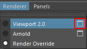

Overview¶
Contents of this page:
Functions¶
RenderOverride overrides the viewport display. It has the following functions
Text (HUD) display
Letterbox display
Grid display
Display of images (Foreground/ Background)
RenderOverride node can be used to customize the text to be displayed, etc.
There is no change in the Viewport 2.0 display (object visibility)
Please set Viewport2.0 options from the option box next to Viewport2.0 (reflected in the RenderOverride view).


Supported Versions / OS¶
Maya® |
OS |
Latest version of plug-ins |
Operation |
Support |
Source code |
|---|---|---|---|---|---|
2022 |
Win10 (64bit) |
1.0.0 |
✅ |
Active |
Maya® API2.0 + Python3.7 |
2023 |
Win10 (64bit) |
1.0.0 |
✅ |
Active |
Maya® API2.0 + Python3.9 |
RenderOverride is designed for use with Autodesk® Maya® 2022 and later
Code is written in Python3, API 2.0, and Cython and has been optimized
Nearly 2x performance improvement over Maya®2020 (Python2)
Due to Python version and performance reasons, versions prior to Maya®2022 are not supported.
Windows 10 is the only OS currently supported.
Windows 11 has not been tested, but may work (Currently not supported).
The supported Maya® versions are basically three generations, from the latest version to the previous two generations.
We will make every effort to ensure that previously supported versions of Maya® will continue to be available, but may not include bug fixes or the latest functionality.
Note
MacOS cannot be supported.
Support for Linux (CentOS, Rocky Linux) is under consideration.
For trouble¶
If you have trouble using the tool, please contact us via Report bugs, suggest new features, etc..
If you have a GitHub account, please report it via Issues.
See also
Known issues are summarized on the page “Known Issues”.